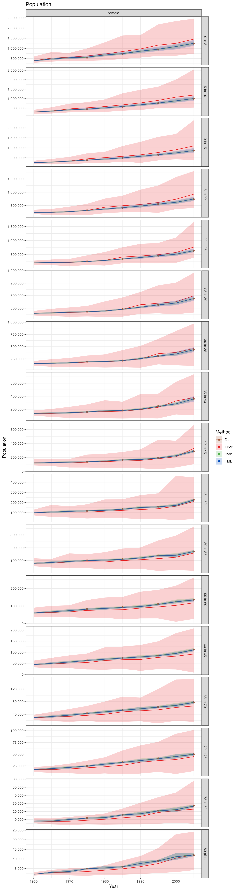
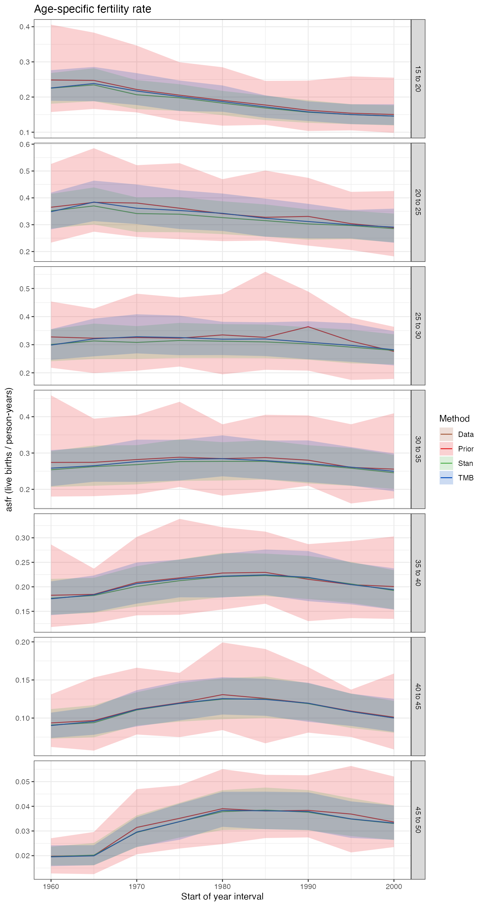
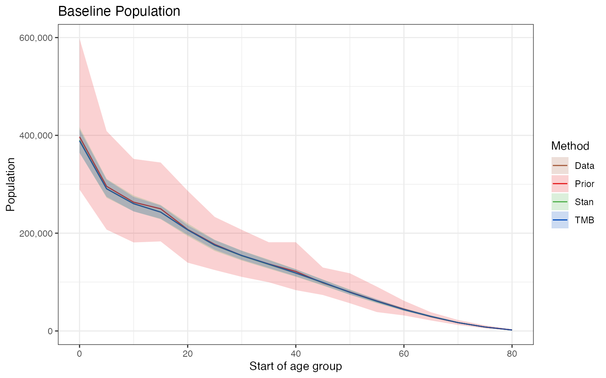
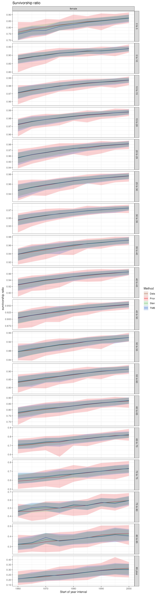
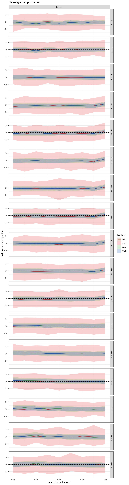

Background
The most commonly used method for creating population projections is the cohort component method of population project (CCMPP). CCMPP is explained in the vignette("ccmpp", package = "demCore").
CCMPP takes as input initial estimates of the baseline population, mortality, fertility, migration and sex-ratio at birth, and outputs projected population estimates. There is no guarantee though that the projected population estimates from CCMPP are consistent with available population data from censuses and population registries.
Wheldon et al (2013) introduced a new model they called “popReconstruct” that embeds CCMPP in a Bayesian hierarchical model. popReconstruct reconciles the CCMPP input preliminary estimates of fertility, mortality, migration, and a baseline population with subsequent population data while accounting for measurement error in these initial estimates.
The code for this model has previously been included in the popReconstruct R package, and includes a detailed vignette that walks through the example in the paper to estimate the Burkina Faso female population between 1960 and 2005. The authors should be commended for publishing an R package with their work, which makes it much easier to expand off of and use.
There are some limitations though of the currently available popReconstruct R package:
The Metropolis Hastings MCMC sampler is coded in R which is much slower than other languages or software. According to the package vignette, the Burkina Faso example took over 24 hours to run to completion.
The Metropolis Hastings algorithm requires proposal variances to sample from the posterior distribtion. This is an added input requirement for the analyst.
The popReconstruct package only implements the female only version of popReconstruct. There is separate code publicly available for estimating both the male and female population but it is not part of the package.
There are not robust built in validations in the package.
In order to address these issues and make it easier to expand off the original popReconstruct model, we have included new implementations of the popReconstruct model in the popMethods package.
The popMethods and demCore packages combined currently include:
Both the Burkina Faso and Thailand example data used by Wheldon et al (2013) and Wheldon et al (2015). It is very helpful they released the data originally, we have simply reformated it to work smoothly with the
popMethodsanddemCorefunctions.Flexible population projection functions like
demCore::ccmppanddemCore::leslie_matrixthat can be used for projecting just the female population or both male and female populations.demCore::ccmppalso includes flexibility to use either just net migration or both immigration and emigration inputs.The popReconstruct model implemented in both Stan and TMB. These are robust, effecient, and well documented statistical modeling languages that are much faster than the original sampler. In the case of Stan, it also provides access to automatic diagnostics and a large userbase.
This vignette walks through using the popMethods popReconstruct functions with the Burkina Faso example data.
popReconstruct model
Original popReconstruct model
The popReconstruct model is a Bayesian hierarchical model that estimates the ccmpp input components (baseline population, srb, asfr, survivorship ratios and net migration) given initial estimates of these components and subsequent population data.
The original model specification described by Wheldon et al (2013) and Wheldon et al (2015) was written similar to below where all the components with a \(*\) are inputs to the model. At level 1, census counts are modeled conditional on the projected populations from level 2. The CCMPP input parameters are modeled at level 3 and level 4 specifies an informative prior for the variance parameters for each ccmpp component.
Level 1 (likelihood for census counts): \[\text{log} \ n^{*}_{l,a,t} \sim \text{Normal}(\text{log} \ n_{l,a,t}, \sigma^2_n)\]
Level 2 (map from ccmpp input parameters to projected population counts): \[n_{l,a,t} = \text{CCMPP}(srb_t, f_{a,t}, n_{l,a,t_0}, s_{l,a,t}, g_{l,a,t})\] Level 3 (priors for all ccmpp input parameters): \[\begin{aligned} \text{log} \ srb_t &\sim \text{Normal}(\text{log} \ srb^*_t, \sigma^2_{srb}) \\ \text{log} \ f_{a,t} &\sim \text{Normal}(\text{log} \ f^*_{a,t}, \sigma^2_{f}) \\ \text{log} \ n_{l,a,t_0} &\sim \text{Normal}(\text{log} \ n^*_{l,a,t_0}, \sigma^2_{n}) \\ \text{logit} \ s_{l,a,t} &\sim \text{Normal}(\text{logit} \ s^*_{l,a,t}, \sigma^2_{s}) \\ g_{l,a,t} &\sim \text{Normal}(g^*_{l,a,t}, \sigma^2_{g}) \end{aligned}\]
Level 4 (informative prior distributions representing measurement error): \[\begin{aligned} \sigma^2_{\nu} &\sim \text{InverseGamma}(\alpha^*_{\nu}, \beta^*_{\nu}) \\ \nu &\in \{{srb, f, n, s, g}\} \end{aligned}\]
where: \[* = \text{input data}\]
\[\begin{aligned} l &= \text{sex} \\ a &= \text{age} \\ y &= \text{year}\end{aligned}\]
\[\begin{aligned} srb &= \text{sex-ratio at birth} \\ f &= \text{age-specific fertility rate} \\ n &= \text{population} \\ s &= \text{survivorship ratio} \\ g &= \text{net migration proportion} \end{aligned}\]
Original popReconstruct model with level 3 rewritten
The popReconstruct model that is included in the popMethods package is slightly rewritten but equivalent. This needs to be explained because it impacts how the outputs are named and formatted.
Instead of directly modeling the ccmpp inputs at level 3 we model the offset or deviation from the initial estimates. This allows us to use things like linear splines to reduce the number of parameters in the model which is explained more in the vignette("popReconstruct_options", package = "popMethods).
Level 3.1 (calculate the estimated ccmpp inputs): \[\begin{aligned} \text{log} \ srb_t &= \text{log} \ srb^*_t + \delta_{srb_t} \\ \text{log} \ f_{a,t} &= \text{log} \ f^*_{a,t} + \delta_{f_{a,t}} \\ \text{log} \ n_{l,a,t_0} &= \text{log} \ n^*_{l,a,t_0} + \delta_{n_{l,a,t_0}} \\ \text{logit} \ s_{l,a,t} &= \text{logit} \ s^*_{l,a,t} + \delta_{s_{l,a,t}} \\ g_{l,a,t} &= g^*_{l,a,t} + \delta_{g_{l,a,t}} \end{aligned}\]
Level 3.2 (priors for ccmpp input offset parameters): \[\begin{aligned} \delta_{srb_t} &\sim \text{Normal}(0, \sigma^2_{srb}) \\ \delta_{f_{a,t}} &\sim \text{Normal}(0, \sigma^2_{f}) \\ \delta_{n_{l,a,t_0}} &\sim \text{Normal}(0, \sigma^2_{n}) \\ \delta_{s_{l,a,t}} &\sim \text{Normal}(0, \sigma^2_{s}) \\ \delta_{g_{l,a,t}} &\sim \text{Normal}(0, \sigma^2_{g}) \end{aligned}\]
where: \[\begin{aligned} \delta_{\nu} &= \text{offset or deviation from the initial estimates} \\ \nu &\in \{{srb, f, n, s, g}\} \end{aligned}\]
How to use the popMethods popReconstruct functions
Setup
In order to fit the popReconstruct model using popMethods::popReconstruct_fit we need a list of the settings for the inputs and ccmpp projections. The required settings are the same as demCore::ccmpp but there are additional optional settings for popMethods::popReconstruct_fit. The only optional setting we will specify for this example is the number of draws (n_draws) to sample from the prior distribution and the posterior distribution when we fit the model with TMB.
# specify settings for this example
settings = list(
# settings required for `demCore::ccmpp` or `popMethods::popReconstruct_fit`
years = seq(1960, 2000, 5),
sexes = c("female"),
ages = seq(0, 80, 5),
ages_mortality = seq(0, 85, 5),
ages_asfr = seq(15, 45, 5),
# optional settings for `popMethods::popReconstruct_fit`
n_draws = 200
)As mentioned above the popReconstruct model incorporates prior knowledge on the measurement error of ccmpp inputs and population data. These hyperparameters can be backcalculated using popMethods::popReconstruct_hyperparameters or manually specified as done here to replicate the original popReconstruct paper (Wheldon et al (2013)).
Sample from the prior distribution for the popReconstruct model
Now we can sample from the prior distribution using popMethods::popReconstruct_prior_draws.
draws_prior <- popMethods::popReconstruct_prior_draws(
inputs = demCore::burkina_faso_initial_estimates,
hyperparameters = hyperparameters,
settings = settings,
value_col = "value",
method_name = "Prior"
)
summary_prior <- popMethods::popReconstruct_summarize_draws(
draws = draws_prior,
summarize_cols = "draw"
)Both draws_prior and summary_prior return a list of data.tables for different components of the model. There are data.tables for each of the ccmpp inputs (baseline, srb, asfr, survival, net_migration), the projected population, and the variance parameters for each ccmmp input and population. Additionally there are data.tables for the offset_ parameters for each ccmpp input which is what is actually estimated in the popReconstruct model. When fitting the original model the spline_offset_ parameters are exactly equal to the offset_ parameters and we are going to ignore them for now, these are explained in the vignette("popReconstruct_linear_splines", package = "popMethods).
summary(summary_prior)
#> Length Class Mode
#> variance 5 data.table list
#> population 8 data.table list
#> offset_srb 6 data.table list
#> offset_asfr 8 data.table list
#> offset_baseline 8 data.table list
#> offset_survival 9 data.table list
#> offset_net_migration 9 data.table list
#> spline_offset_srb 6 data.table list
#> spline_offset_asfr 8 data.table list
#> spline_offset_baseline 8 data.table list
#> spline_offset_survival 9 data.table list
#> spline_offset_net_migration 9 data.table list
#> srb 6 data.table list
#> asfr 8 data.table list
#> baseline 8 data.table list
#> survival 9 data.table list
#> net_migration 9 data.table list
head(summary_prior$population)
#> year sex age_start age_end method mean q2.5 q97.5
#> 1: 1960 female 0 5 Prior 391585.7 219239.5 551087.0
#> 2: 1960 female 5 10 Prior 295433.4 212014.8 427232.3
#> 3: 1960 female 10 15 Prior 263063.8 192455.2 389253.5
#> 4: 1960 female 15 20 Prior 246125.8 180477.7 331112.5
#> 5: 1960 female 20 25 Prior 208733.1 144313.2 273216.2
#> 6: 1960 female 25 30 Prior 174391.6 119082.6 231361.3
head(draws_prior$population)
#> year sex age_start age_end value draw method
#> 1: 1960 female 0 5 404054.1 1 Prior
#> 2: 1960 female 0 5 389268.3 2 Prior
#> 3: 1960 female 0 5 219547.8 3 Prior
#> 4: 1960 female 0 5 329019.6 4 Prior
#> 5: 1960 female 0 5 493664.2 5 Prior
#> 6: 1960 female 0 5 416297.2 6 PriorFit the popReconstruct model with Stan
Stan is a C++ program that does Bayesian statistical inference. It requires a model written in the Stan language that calculates the log posterior likelihood. The program can be compiled and then run from R, Python, or some other languages. By default it uses the no-U-turn MCMC sampler which is a variant of Hamiltonian Monte Carlo and the Metropolis Hastings algorithm. One of the nice things about Stan is that there is a large community of users with a well documented code base, manual and lots of examples.
Below the model is fit in Stan using popMethods::popReconstruct_fit with the same inputs, hyperparameters and settings as for sampling from the prior. The chains, warmup, iter, and seed arguments are specific to fitting the model in stan and if we were actually using the results we’d want to run for more iterations/warmup with more chains.
fit_stan <- popMethods::popReconstruct_fit(
inputs = demCore::burkina_faso_initial_estimates,
data = demCore::burkina_faso_data,
hyperparameters = hyperparameters,
settings = settings,
value_col = "value",
software = "stan",
chains = 2, warmup = 1000, iter = 2000, seed = 3
)
draws_stan <- popMethods::popReconstruct_posterior_draws(
fit = fit_stan,
inputs = demCore::burkina_faso_initial_estimates,
settings = settings,
value_col = "value",
software = "stan",
method_name = "Stan"
)
summary_stan <- popMethods::popReconstruct_summarize_draws(
draws = draws_stan
)The outputs draws_stan and summary_stan are formatted exactly the same as the corresponding prior distribution outputs.
One of the cool features of fitting the model in stan is that we can then use a bunch of the built in diagnostics and accessory packages. This is explained more at the end of this vignette.
Fit the popReconstruct model with TMB
TMB is another statistical modeling software written in C++. Similar to Stan, the model is written in TMB/C++ to calculate the log posterior likelihood. The program is then compiled and given to R optimizers like nlminb().
TMB can be really fast because it uses the laplace approximation to integrate random effects whereas as MCMC integrates all parameters. Sometimes the laplace approximation is not accurate and its application to this model needs to be tested more rigorously. Whereas Stan provides a way to specify bounds for transformed parameters (in the popReconstruct model we need to constrain projected populations to be greater than or equal to zero), TMB does not. The constraint can only be applied when producing draws from the posterior distribution.
fit_tmb <- popMethods::popReconstruct_fit(
inputs = demCore::burkina_faso_initial_estimates,
data = demCore::burkina_faso_data,
hyperparameters = hyperparameters,
settings = settings,
value_col = "value",
software = "tmb"
)
draws_tmb <- popMethods::popReconstruct_posterior_draws(
fit = fit_tmb,
inputs = demCore::burkina_faso_initial_estimates,
settings = settings,
value_col = "value",
software = "tmb",
method_name = "TMB"
)
summary_tmb <- popMethods::popReconstruct_summarize_draws(
draws = draws_tmb,
summarize_cols = "draw"
)Plotting and comparing the results
Now we have three sets of draws and summary statistics of the prior/posterior distribution using different statistical modeling software. popMethods::rbindlist_dts is a useful function to combine the three lists of data.tables into just one list of data.tables which can then be used for comparison plots.
summary_combined <- popMethods::rbindlist_dts(
summary_prior,
summary_stan,
summary_tmb
)Theoretically the Stan and TMB models should be exploring the same posterior distribution and give similar results especially as we take more and more samples from the posterior distribution. In this example vignette we are using a reduced number of iterations and samples to reduce the runtime.
The following series of diagnostic plots for each component of the model include a line for the mean and the shaded areas go from the 2.5 to 97.5 percentiles.





Additional Stan Diagnostics
By fitting the popReconstruct model with Stan we can take advantage of many of the diagnostics built into the rstan package and other related packages like shinystan and bayesplot.
When printing out the model fit object you can get information about Rhat and the effective sample size. Stan has a nice page explaining some common warnings and diagnostics that people can run into. “Rhat” for example tests whether the MCMC chains have mixed well by comparing the between and within chain estimates.
fit_stan_summary <- rstan::summary(
fit_stan,
pars = c("sigma2_srb", "sigma2_asfr", "sigma2_population", "sigma2_survival",
"sigma2_net_migration"),
probs = c(0.1, 0.9)
)
print(fit_stan_summary$summary)
#> mean se_mean sd 10%
#> sigma2_asfr[1] 0.012542453 2.415914e-03 0.0148087509 0.0033339274
#> sigma2_population 0.001357721 1.844938e-05 0.0004038193 0.0009064479
#> sigma2_survival[1] 0.013008523 1.288982e-03 0.0091279852 0.0045459534
#> sigma2_net_migration[1] 0.006677565 1.271624e-04 0.0017472727 0.0047025043
#> 90% n_eff Rhat
#> sigma2_asfr[1] 0.026034112 37.57283 1.033449
#> sigma2_population 0.001900039 479.08252 1.003938
#> sigma2_survival[1] 0.025170147 50.14828 1.043819
#> sigma2_net_migration[1] 0.009015376 188.80083 1.010621The shinystan R package is also useful for being able to quickly look at useful diagnostics for all parameters.
shinystan::launch_shinystan(fit_stan)The bayesplot R package provides many plotting functions that can be used on MCMC objects from different statistical modeling packages. They return ggplot objects which means they can easily be extended upon too.
The following pairs plot shows univariate histograms and bivariate scatter plots for the variance parameters in the popReconstruct model. This plot is useful for identifying possible collinearity between parameters or multiplicative non-identifiabilities as explained here
posterior <- as.array(fit_stan)
np <- data.table(bayesplot::nuts_params(fit_stan))
bayesplot::mcmc_pairs(
posterior,
np = np,
pars = c("sigma2_asfr[1]", "sigma2_population", "sigma2_survival[1]",
"sigma2_net_migration[1]", "lp__")
)Another useful diagnostic is a trace plot which shows each chain as it changes for each iteration. The variance parameters for population and net_migration are nice examples of good mixing where the different chains are exploring the same parameter space. The trace plots for the variance parameters for asfr and survival indicate poor mixing which may be due to the few number of iterations used when fitting the model for this vignette.
bayesplot::mcmc_trace(
posterior,
regex_pars = "sigma2",
np = np) +
xlab("Post-warmup iteration")
References
Wheldon, Mark C., Adrian E. Raftery, Samuel J. Clark, and Patrick Gerland. 2013. “Reconstructing Past Populations With Uncertainty From Fragmentary Data.” Journal of the American Statistical Association 108 (501): 96–110. https://doi.org/10.1080/01621459.2012.737729.
Wheldon, Mark C., Adrian E. Raftery, Samuel J. Clark, and Patrick Gerland. 2015. “Bayesian Reconstruction of Two-Sex Populations by Age: Estimating Sex Ratios at Birth and Sex Ratios of Mortality.” Journal of the Royal Statistical Society. Series A: Statistics in Society 178 (4): 977–1007. https://doi.org/10.1111/rssa.12104.